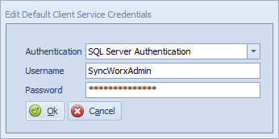
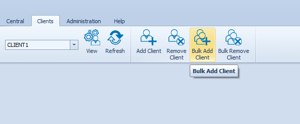
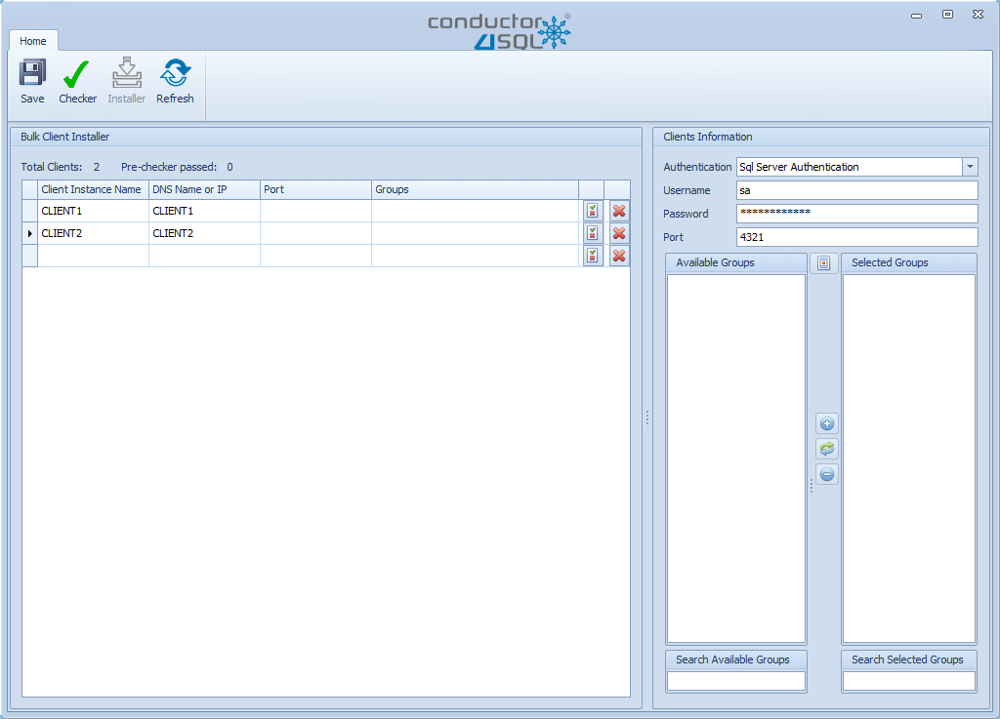
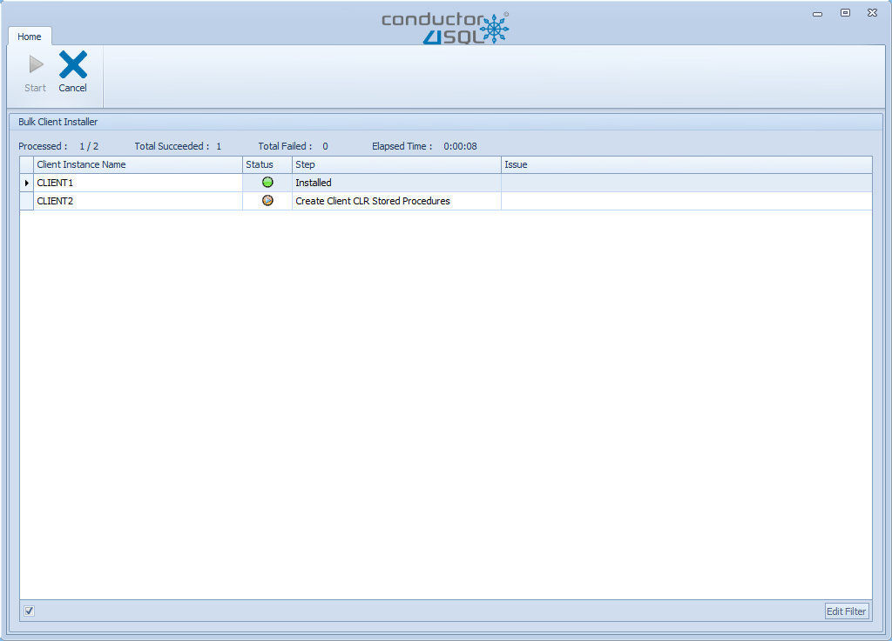

Client Server Installation
Before you can use Conductor4SQL on a client instance, you need to install that client inside onto Conductor4SQL.
Initial Setup
Before you start installing clients on Conductor4SQL, one needs to decide whether Conductor4SQL needs to use a SQL Server login or a Windows login to communicate with clients.
To adjust these settings, select Administration >> C4SQL Configuration >> Edit Default Client Service Credentials.
Edit the credentials in the screen below and click on the Ok button when complete.

Note
You can install a number of clients and then change the default, however, this will only affect clients that are installed after the change. Previously installed clients will still use the original credentials that they were installed with.
Note
By default the login created at the client has a sysadmin role but these privileges can be lowered if needed.
Warning
If you use Windows Authentication for the client installations, there is a caveat in that the windows user that you log in as needs SQL Server access for any client that you are connecting to via the Client Console
Installing the Client (one-at-a-time)
Using this option you can install clients one-at-a-time
You can add a client by selecting Clients >> Add Client
Next fill in all the information for the Install Client dialog box:
- Server Name/IP - The DNS name or ip address for the client Server
- This is a re-install? - If the client was previously installed you will get a drop-down list showing the previous installation(s) for this client
- Authentication - is SQL Server authentication where your options are "Windows Authentication" or "SQL Server Authentication"
- If you are using "SQL Server Authentication" fill in the User name and Password fields.
- Port - The TCP port in which central will connect to the client.
- Group - the client group in which to add the Client Server to (these are defined in the Administration section).
- Business Attributes - Custom fields for the client that are defined in the Administration Section.
Finally select the Text Connection button
If the test is successful the Install button will be enabled. Click the Install button to continue.
The Client Server Pre-Checker
- A green circle indicates a favorable result.
- An amber circle indicates a warning.
- A blue circle indicates that a step could not be run due to error in a previous step.
- A red circle indicates that the Pre-Checker discovered an issue and will not proceed.
- A gray circle indicates that this step hasn't run yet.
- A orange arrow indicates that this step is currently running.
Pre-Checker Issues
- Step 1: Ensure that client server isn't already installed - Check that client server isn't already in the list of installed clients
- Step 2: Ensure that we can ping the client server - If this fails run a manual ping. If this also fails contact your network administrator.
- Step 3: Ensure that we can access MS SQL server - If this fails run SQL Server Management Studio and check if you can connect to the server manually.
- Step 4: Ensure that mixed mode authentication is enabled - If this fails switch the server to use Mixed-Mode authentication and restart the server.
- Step 5: Ensure that SQL version is MS SQL 2005 sp3 or higher is installed - If this fails you will need to upgrade your server to minimum requirements as per the central requirements document.
- Step 6: Ensure that the current SQL user is in the sysadmin user group - You require a user with sys-admin rights to install Conductor4SQL
- Step 7: Ensure that service broker is enabled - Service broker must be enabled on the SQL Server.
- Step 8: Ensure that Conductor4SQL database does not exist - We run this step to ensure that Conductor4SQL isn't already installed on this server.
- Step 9: Ensure that Conductor4SQL login does not exist - Same as above.
Client Installation Progress
After all steps in the pre-checker are successful we are ready to install Conductor4SQL onto the client server.
To start the install process click on the Start button.
If the install is successful you should get a Client successfully installed notification.
Installing the Client (using the bulk installer)
Using this option you can install a very large number of clients at once.
You can add the clients by selecting File >> Bulk Add Client

Next fill in the list of clients in the Bulk Client Installer screen

Bulk Client Capture columns:
- Client Instance Name - this column needs to be the name of the SQL Server
- DNS Name or IP - this column is the DNS Name of IP address of the server
- Port - the port used for central to communicate with the client (default is 4321)
- Groups - A comma separated list of groups that you would like to assign the client to.
- Business Attributes - All defined business attributes are situated between the port and groups columns.
Note
this grid acts like a spreadsheet grid and it is in fact recommended that you copy/paste the client information from a spreadsheet.
Clients Information options:
- Authentication - the SQL Server authentication method used where the options are "Windows Authentication" and "SQL Server Authentication"
- Username and Password fields are only visible if you select "SQL Server Authentication"
- Port - the port to use for central to communicate with the clients if no port is defined in the client grid.
- Groups - select what groups to assign all bulk install clients to.
Click on the Save button to save your list of clients to install at a later date.
Bulk Pre-Install Checker
Click on the Checker button to run the "Bulk Pre-Install Checker".
Click on the Start button to start the "Bulk Pre-Install Checker"
Note
If you have any errors you can use the same Pre-Checker Issues Diagnostics as the one-at-a-time client installation
Once the pre-checker has completed. The clients that were successful (green circles) are ready for installation.
To install clients first click on the Back button.
Bulk Client Installer
Now the Installer button will be enabled. Click on the Installer button.
Note
only the clients where the "Bulk Pre-Install Checker" was successful are included in this list.
Now click on the Start button and the clients will start installing and you can follow which step each client is on.

When the installer is complete, click on the Back button and here you can repeat the bulk installation process.